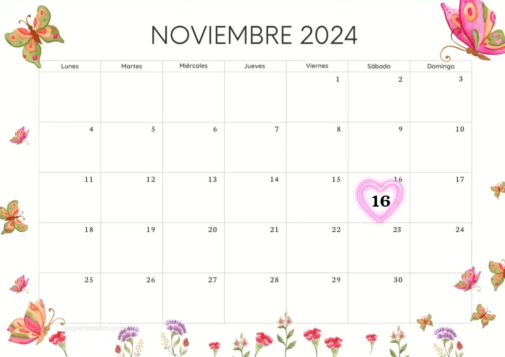

REDES SOCIALES
 osoriohdz33
osoriohdz33  Aida Osorio 7713446235
Aida Osorio 7713446235
El inicio de una nueva etapa siempre me resulta abrumador, ya que implica entrar en un espacio lleno de incertidumbre y desconocimiento. Mi vida como estudiante ha sido un largo camino de aprendizajes y enseñanzas. Al principio, la universidad me parecía un lugar inmenso y desconocido, donde todo parecía nuevo y desafiante. Sin embargo, con el tiempo, logré adaptarme a este nuevo entorno, enfocándome en aprender y profundizar en temas que, poco a poco, fueron despertando mi interés. La universidad no solo consiste en concentrarse en los estudios, sino que también te brinda la oportunidad de desarrollarte en diversas actividades y explorar nuevas facetas de ti mismo. Además, es un lugar donde puedes forjar amistades que, en muchos casos, te acompañarán por el resto de tu vida. Actualmente me encuentro cursando el séptimo semestre de mi carrera y espero seguir adquiriendo nuevos conocimientos en lo que resta de esta etapa. Sin embargo, terminar la carrera no significa dejar de aprender; al contrario, representa el comienzo de un continuo proceso de aprendizaje y esfuerzo para ser cada día mejor en lo que hago.
Escuchar musica:
AlbumVer series: Rosario Tijeras
Pasar tiempo con amigos
FECHA DE NACIMIENTO: 16/NOVIEMBRE/2003 
osoriohdz33 Aida Osorio 7713446235